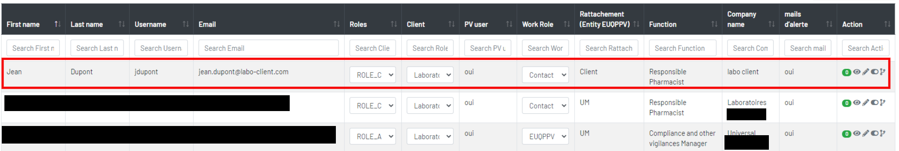
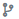
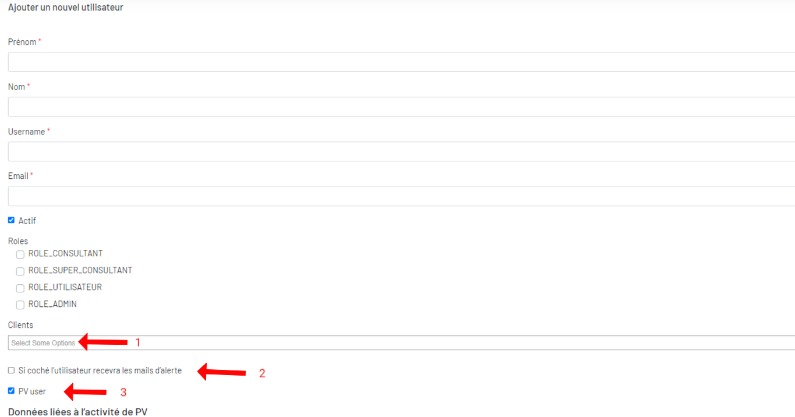
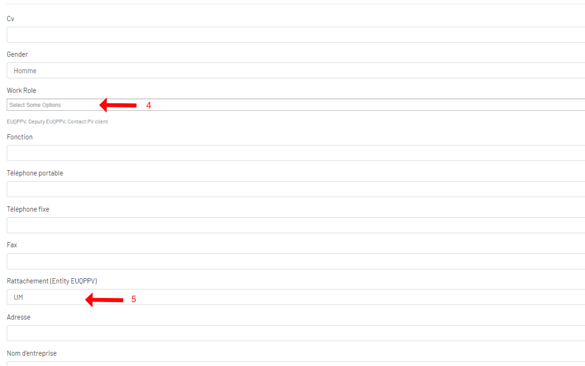
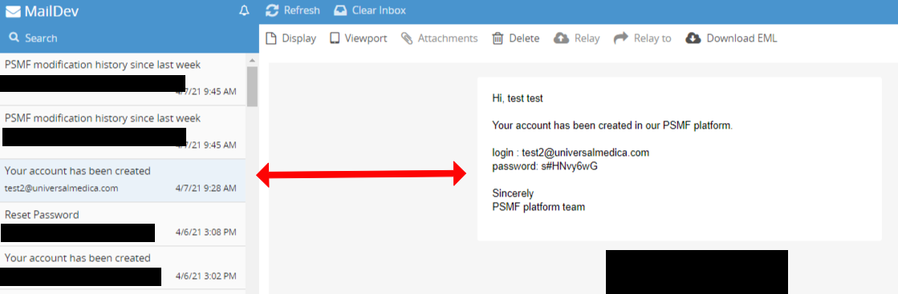

Utilisateurs
Il existe deux types d'uilisateurs: l'un pour l'administration de la plateforme (ROLE_ADMIN, ROLE_UTILISATEUR, ROLE_CONSULTANT, ROLE_SUPER_CONSULTANT), l'autre pour le document psmf (PV user). mais les deux sont dans la même liste.
1. Liste des utilisateurs

- Nombre de documents crées par cet utilisateur.
- Visualisez un utilisateur.
- Modifiez un utilisateur.
- Désactivez/activez un utilisateur.
-  Historique des modification d'un utilisateur.
- Ajoutez un utilisateur.
- Guide d'utilisation
2. Ajoutez un utilisateur
 
1l'utilisateur peut associer plusieurs clients.
2si coché l’utilisateur recevra les e-amils par semaine de l'historique des modifications de psmf de ses clients.
3si coché l’utilisateur liée à l’activité de PV (SYS_EUQPPV_xxx,SYS_DEPUTY_EUQPPV_xxx,SYS_CONTACT_PV_CLIENT_xxx)
4PV utilisateur peut avoir plusieurs "Work Role (EUQPPV, Deputy EUQPPV et Contact PV client)"
5PV utilisateur peut avoir que une seule "Rattachement (Entity EUQPPV)"
Un compte utilisateur est caractérisé par :
- Données liées au profil :
- Un identifiant – Obligatoire,
- Un mot de passe – Obligatoire,
- Un mail – Obligatoire,
- Un statut – Obligatoire (actif ou inactif),
- Un niveau d’accès – Obligatoire
- Administrateur, (ROLE_ADMIN)
- Utilisateur, (ROLE_UTILISATEUR)
- Consultant, (ROLE_CONSULTANT)
- Super Consultant, (ROLE_SUPER_CONSULTANT)
- Une liste de clients auxquels il a accès – Obligatoire,
- Activation de mail alerte – si coché l’utilisateur recevra les mails d’alerte.
- Données liées à l’activité de PV (
SYS_EUQPPV_xxx,SYS_DEPUTY_EUQPPV_xxx,SYS_CONTACT_PV_CLIENT_xxx):- Un nom – Obligatoire,
- Un prénom – Obligatoire,
- Un CV – Obligatoire (Image),
- Un genre – Obligatoire (« Femme » / « Homme »),
- Une liste de rôles – Obligatoire
- EUQPPV
- Deputy EUQPPV
- Contact PV Client
- Autre
- Fonction – Obligatoire,
- Un mobile – Facultatif,
- Un fixe – Obligatoire,
- Un Fax – Obligatoire,
- Un mail – Obligatoire,
- Un entity EUQPPV – Obligatoire (« UM » / « Client / « Presta »)
- Une adresse d’exercice – Obligatoire,
- Un nom d’entreprise – Obligatoire,
3. Mot de passe d'un utilisateur
Après avoir créé un utilisateur, l'utilisateur recevra un mail contenant un mot de passe qui est automatiquement généré par la plateforme.

4. Rôles et accès
Un utilisateur non-administrateur ne peut accéder uniquement aux clients qui lui sont attribués.
| Administrateur | Utilisateur | Super consultant | Consultant | |
|---|---|---|---|---|
| La gestion du Template | oui | non | non | non |
| La gestion des variables | ||||
| Equivalence locale | oui | oui | non | non |
| Equivalence globale | oui | non | non | non |
| Autre | oui | non | non | non |
| La gestion du PSMF | ||||
| Gestion Client | oui | non | non | non |
| Modification des champs du PSMF | oui | oui | non | non |
| Gestion des montée de version du doucment | oui | oui | non | non |
| La génération du document | ||||
| Télécharger documents applications | oui | oui | oui | oui |
| Télécharger documents toutes versions | oui | non | oui | non |
| L'administration de la plateforme | oui | non | non | non |
| L'audit et l'historique des modifications | oui | non | non | non |